AI08 — AI Se Resume Aur Cover Letter Kaise Banayein: Job Ke Liye Perfect Application?
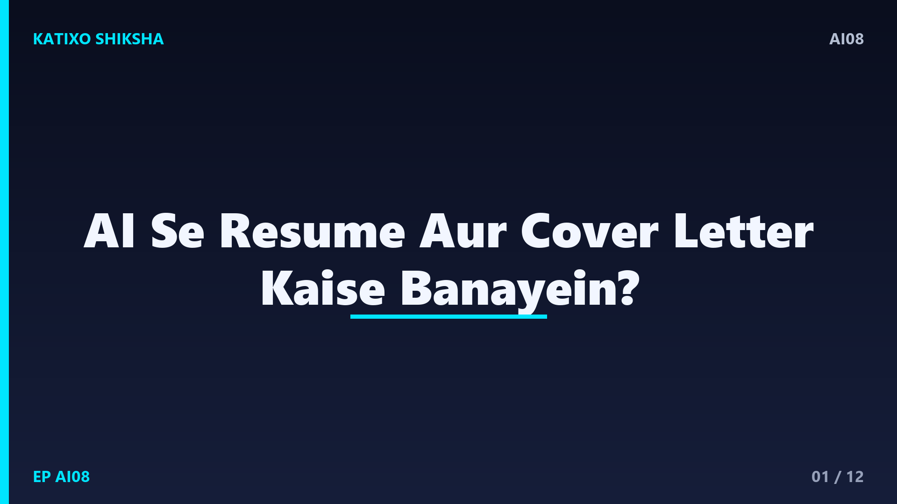
Slide 1दोस्तों, सोचो — आपको कहीं job के लिए apply करना है, पर resume बनाते वक़्त समझ नहीं आता कि क्या लिखें, कैसे लिखें, और cover letter तो और भी मुश्किल लगता है। बहुत से अच्छे लोग सिर्फ़ इसलिए interview तक नहीं पहुँच पाते क्योंकि उनका resume कमज़ोर रह जाता है। अच्छी खबर ये है कि अब AI की मदद से आप मिनटों में एक साफ़, professional resume और cover letter बना सकते हो। Katixo KhojLab की इस AI series में आज हम यही सीखेंगे — step by step, बिल्कुल आसान तरीके से। चलो शुरू करते हैं।
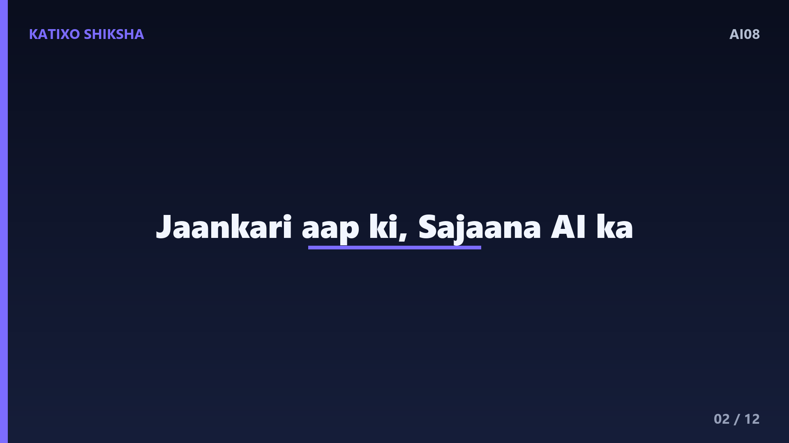
Slide 2सबसे पहले समझो — AI यहाँ करता क्या है? AI आपका सारा काम अकेले नहीं करता, बल्कि आपकी दी हुई जानकारी को एक अच्छे, professional तरीके से लिख देता है। आप उसे अपनी पढ़ाई, experience और skills बताते हो, और वो उसे साफ़ भाषा में, सही format में arrange कर देता है। यानी आपके पास जो भी details हैं, AI उन्हें ऐसे शब्दों में ढाल देता है जो recruiter को अच्छे लगें। इसलिए याद रखो — जानकारी आपकी, और उसे सजाने का काम AI का।
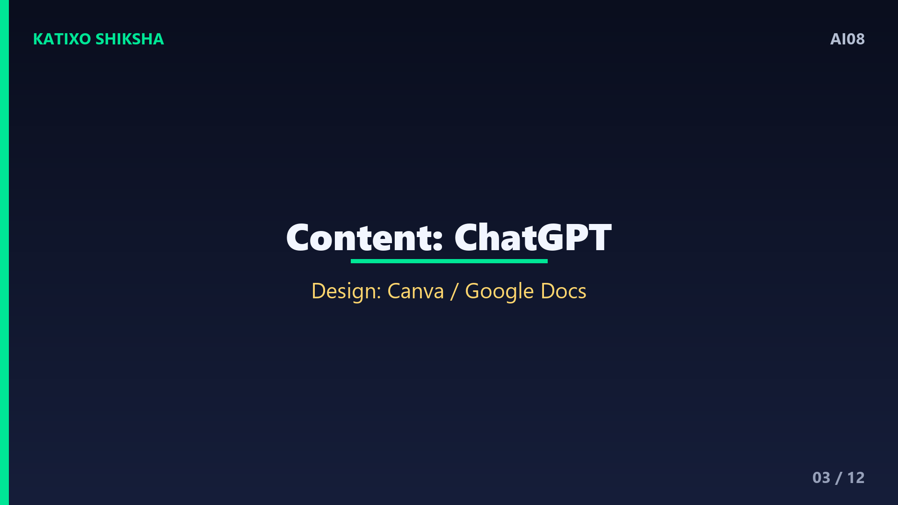
Slide 3अब जानते हैं कुछ काम के tools के नाम। पहला और सबसे आसान — ChatGPT, जिसमें आप बात करते-करते अपना पूरा resume और cover letter लिखवा सकते हो। दूसरा — Canva, जिसमें free resume templates मिलते हैं जो दिखने में सुंदर और professional होते हैं। तीसरा — Google Docs, जिसमें भी कई resume templates पहले से मौजूद हैं। एक अच्छा तरीका ये है — content यानी लिखाई ChatGPT से बनवाओ, और फिर उसे Canva या Google Docs के सुंदर template में डाल दो। दोनों का best मिल जाएगा।
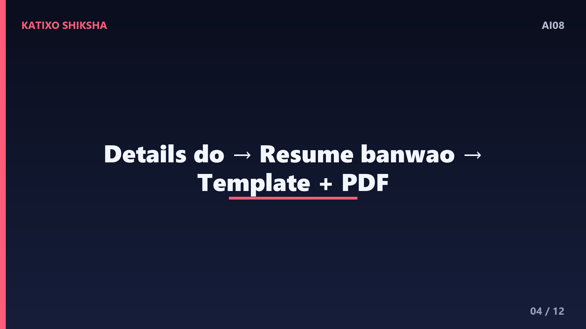
Slide 4अब step by step देखते हैं resume बनाना। पहला step — ChatGPT खोलो और उसे अपनी सारी details दो, जैसे नाम, पढ़ाई, अगर experience है तो वो, और आपकी skills। दूसरा step — साफ़ निर्देश दो, जैसे — 'इन details से एक one page का professional resume बनाओ, simple English में, जो data entry job के लिए सही हो'. तीसरा step — जो resume आए उसे पढ़ो, कोई गलत बात ठीक करो, और फिर इसे Canva के किसी अच्छे template में copy कर दो। आख़िर में PDF में download कर लो।
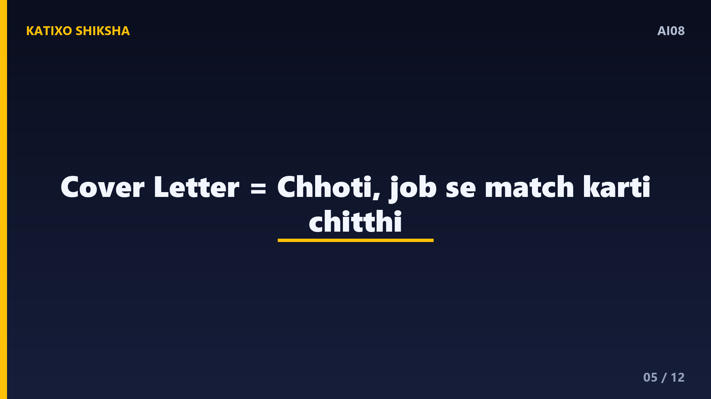
Slide 5अब cover letter की बारी। cover letter एक छोटी सी चिट्ठी होती है जिसमें आप बताते हो कि आप ये job क्यों चाहते हो और आप सही person क्यों हो। AI से इसे बनवाना बहुत आसान है। आप कह सकते हो — 'इस job के लिए एक छोटा, polite cover letter लिखो, जिसमें मेरा अनुभव और मेरी दिलचस्पी झलके'. ध्यान दो — job की description का कोई एक-दो खास शब्द भी अपने प्रॉम्प्ट में डाल दो, ताकि cover letter उसी job से मेल खाए, ना कि एक generic चिट्ठी लगे।
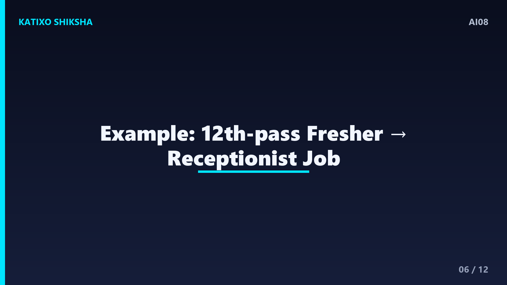
Slide 6चलो एक concrete example लेते हैं। मान लो आप एक fresher हो, बारहवीं पास, और एक receptionist की job के लिए apply करना चाहते हो। आप ChatGPT से कह सकते हो — 'मैं बारहवीं पास हूँ, मुझे computer और अच्छी communication आती है, इन details से receptionist job के लिए एक one page resume और एक छोटा cover letter बनाओ, simple English में'. AI दोनों चीज़ें बना देगा। फिर आप अपना नाम, फ़ोन और email जोड़कर, Canva template में डालकर, एक professional application तैयार कर सकते हो।
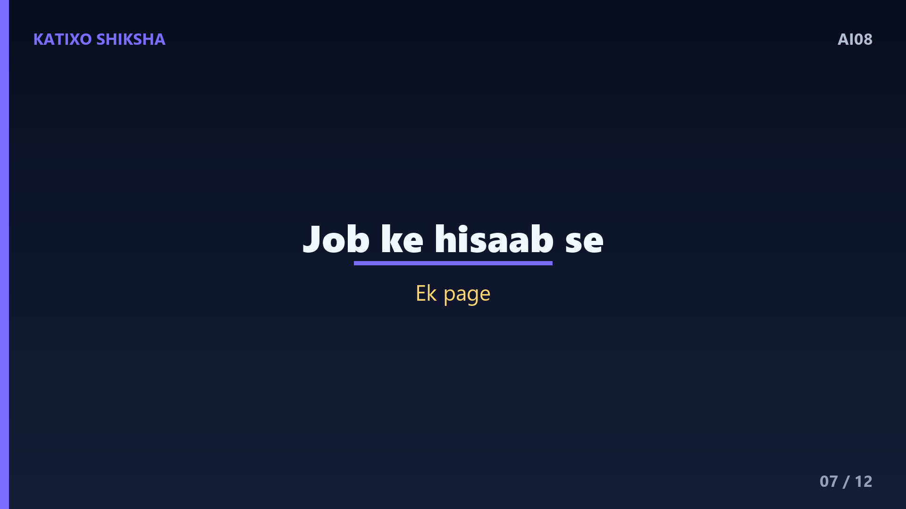
Slide 7कुछ काम की tips भी जान लो। पहली tip — हर job के लिए resume और cover letter थोड़ा-थोड़ा बदलो; उसी job में माँगी गई skills के शब्द अपने resume में डालो, इससे selection के chance बढ़ते हैं। दूसरी tip — resume को छोटा रखो, ज़्यादातर मामलों में एक page काफ़ी है, और सीधी-सादी language इस्तेमाल करो। तीसरी tip — points में लिखो, बड़े-बड़े paragraph से बचो, और अपनी सबसे ज़रूरी skills व achievements ऊपर रखो ताकि recruiter को पहली नज़र में दिख जाएं।
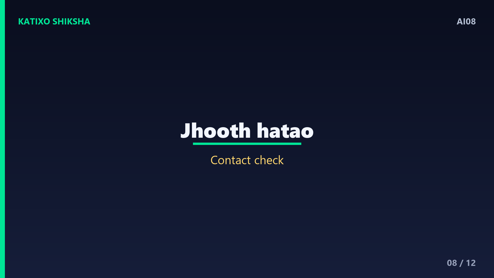
Slide 8अब एक ज़रूरी सावधानी, क्योंकि resume में सच्चाई सबसे ज़रूरी है। पहली बात — AI कभी-कभी अपने आप कोई degree, experience या skill जोड़ देता है जो आपके पास है ही नहीं; ऐसी हर झूठी बात ज़रूर हटाओ, क्योंकि interview में पकड़े जाने पर सब बेकार हो जाता है। दूसरी बात — अपना नाम, फ़ोन, email और address एक बार ध्यान से check करो कि सही हैं। तीसरी बात — final resume को खुद एक बार पूरा पढ़ो, ताकि कोई अजीब वाक्य या गलती छूट ना जाए।
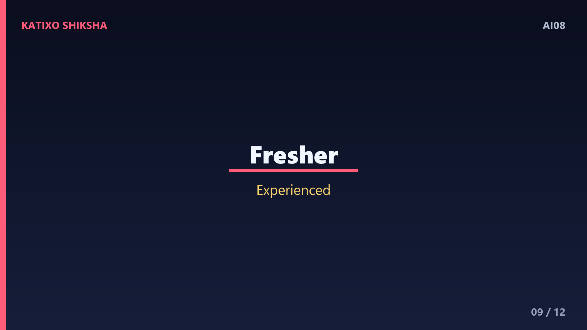
Slide 9अब समझो ये किन-किन लोगों के काम आ सकता है। एक fresher, जिसे पहली job चाहिए और समझ नहीं आता कि resume में क्या लिखे। एक experienced person, जो अपने पुराने resume को नए और बेहतर तरीके से लिखवाना चाहता है। एक student, जिसे internship के लिए apply करना है। और कोई भी, जिसे जल्दी से एक cover letter या एक professional email चाहिए। यानी जहाँ भी अपनी बात अच्छे शब्दों में लिखकर देनी हो, वहाँ AI आपका भरोसेमंद साथी है।
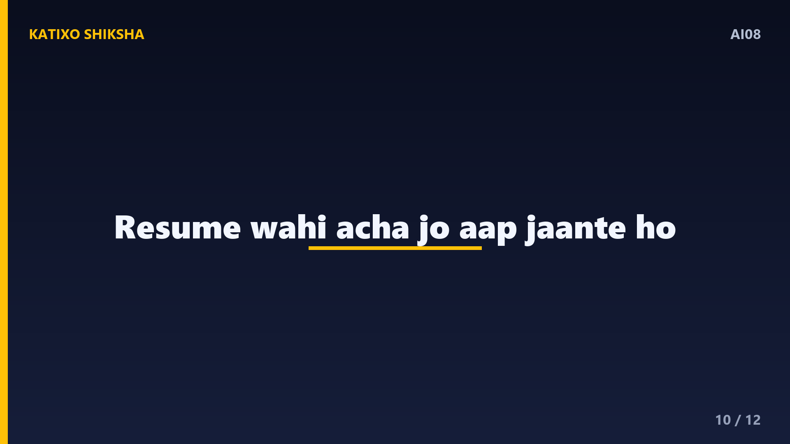
Slide 10एक बात साफ़ कर दूँ ताकि कोई ग़लतफ़हमी ना रहे। एक अच्छा resume सिर्फ़ सुंदर शब्दों से नहीं बनता, उसमें आपकी असली मेहनत और skills दिखनी चाहिए। AI आपकी जानकारी को बेहतर ढंग से पेश करने में मदद करता है, पर असली ताक़त आपकी अपनी ability और तैयारी है। मेरी सलाह — एक बार AI से resume बनवाकर उसे अच्छे से समझो, ताकि interview में हर लाइन के बारे में आप confidently बात कर सको। resume वही अच्छा है जिसे आप खुद पूरी तरह जानते हो।
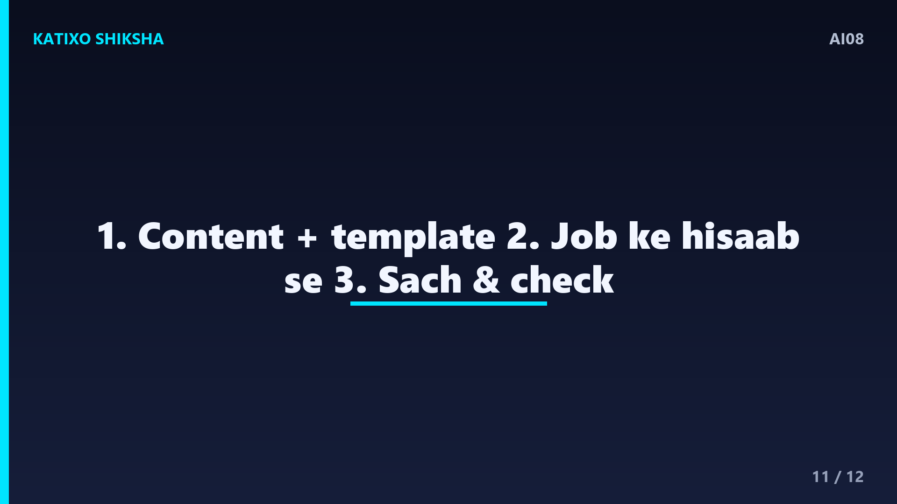
Slide 11तो चलो एक quick recap करते हैं, तीन points में। एक — AI आपकी दी हुई details को professional resume और cover letter में बदल देता है; content ChatGPT से बनवाओ और सजाने के लिए Canva या Google Docs के template इस्तेमाल करो। दो — हर job के हिसाब से resume थोड़ा बदलो, उसी job की skills के शब्द डालो, और इसे एक page व points में साफ़ रखो। तीन — कोई भी झूठी जानकारी हटाओ, अपनी contact details check करो, और final copy खुद एक बार ज़रूर पढ़ो।
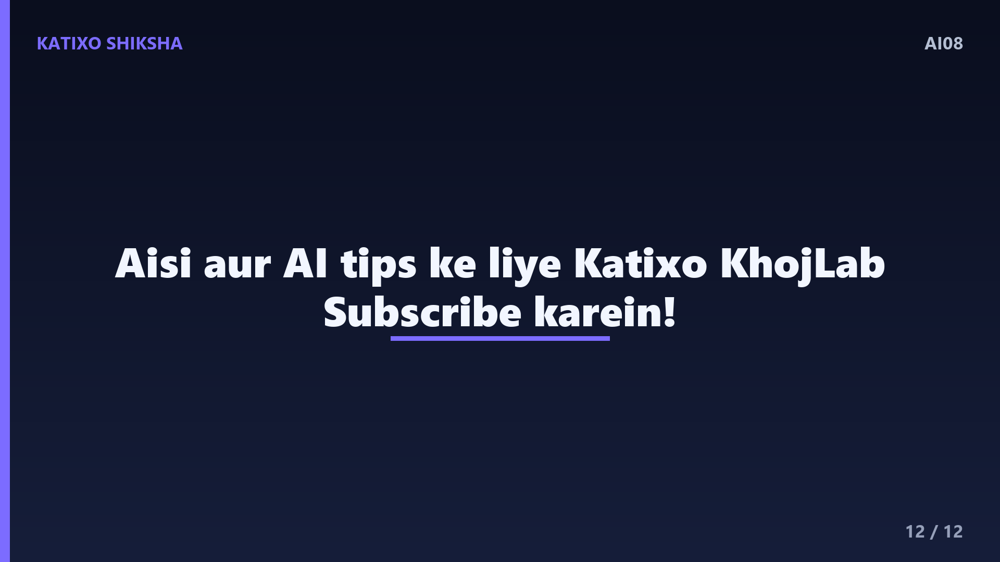
Slide 12तो दोस्तों, अब resume और cover letter बनाना कोई डरने वाली बात नहीं रही; AI की मदद से आप कुछ ही मिनटों में एक साफ़, professional application तैयार कर सकते हो। मेरी guzaarish है — आज ही अपनी details इकट्ठा करो और AI से अपना पहला resume बनवाकर देखो, फिर उसे एक अच्छे template में सजाओ। याद रखो, हर बड़ी job एक अच्छे resume से शुरू होती है। Aisi aur AI tips ke liye Katixo KhojLab subscribe karein! मिलते हैं अगले episode में।